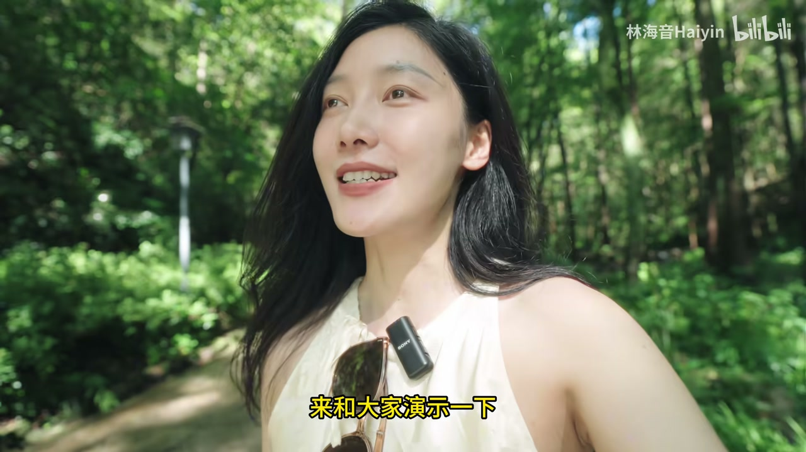
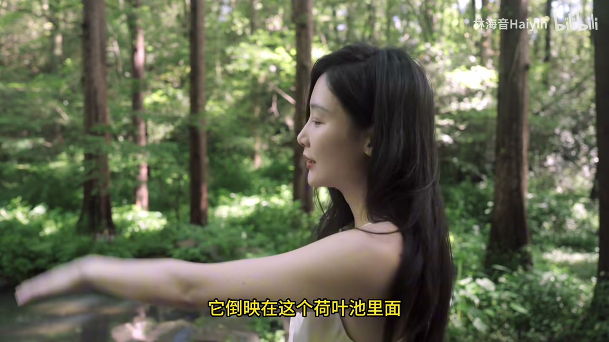
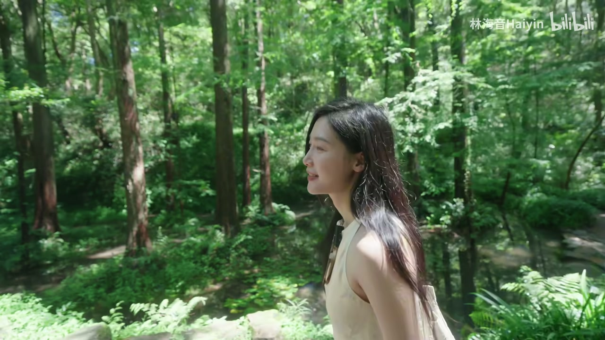
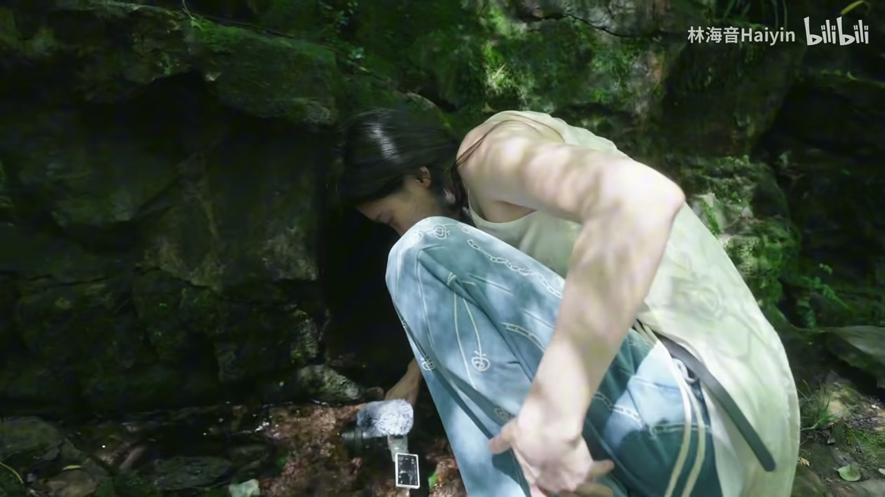
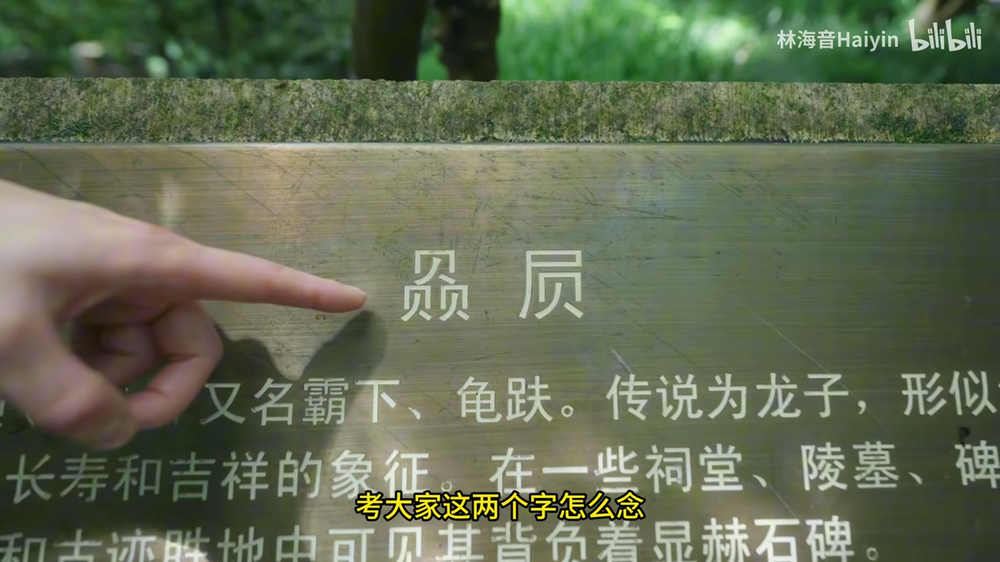
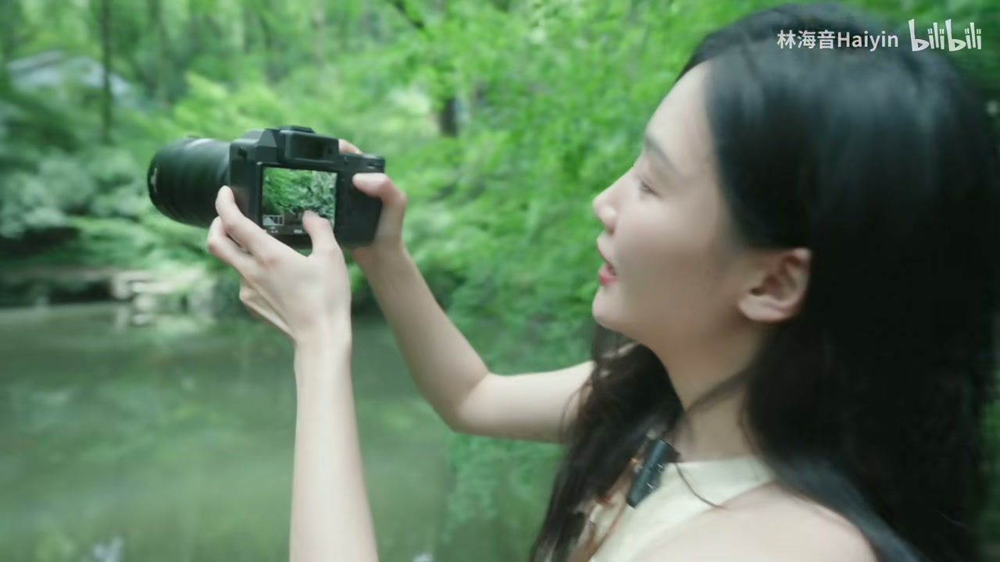
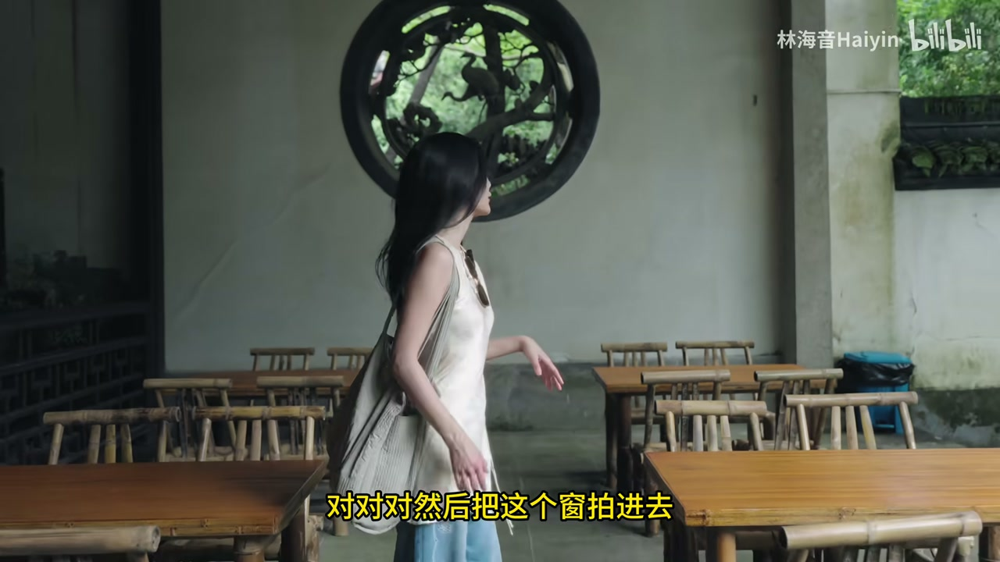
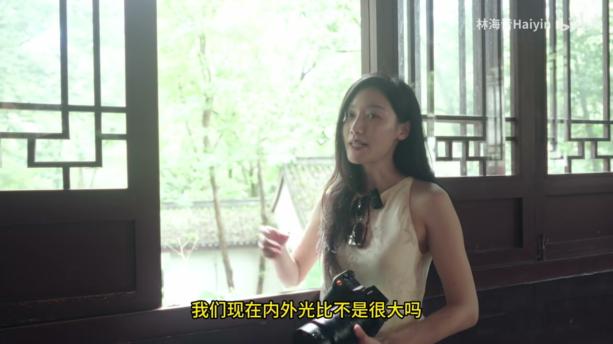

01
中文
这个公园早上7点就开门了，我会建议大家早点进园，人会少很多。
EN
This park opens at seven in the morning — I'd recommend getting in early when there are far fewer people.
表达提示opens at seven（7点开门）；far fewer people（人少很多）

Scene English · 摄影教学 · 杭州虎跑公园
Visit Hangzhou Without Hupao Park? I'd Be Heartbroken! Photographer's Hidden Spots
🎧 语音讲解
Hupao Park: The Water-Forest at the Gate
情境博主介绍虎跑公园名字的读音争议（虎跑还是虎袍），建议早上7点开门就进园人少，一进门就是一片水山林。语域：讲解口播，带疑问互动。
这个公园早上7点就开门了，我会建议大家早点进园，人会少很多。
This park opens at seven in the morning — I'd recommend getting in early when there are far fewer people.
表达提示opens at seven（7点开门）；far fewer people（人少很多）
一进门就是一片水山林，可以在这里稍作停留。
Right past the gate is a forest of water and trees — worth stopping by for a while.
表达提示a forest of water and trees（水山林）；stop by（稍作停留）
如果是晴天，天很蓝，倒映在池子里面，就会很有那种印象派油画的感觉。
On a sunny day, the blue sky reflects in the pond and gives it that impressionist oil-painting feel.
表达提示reflect in the pond（倒映在池中）；impressionist（印象派的）
稍作停留 → stop by / linger a while
印象派油画 → impressionist oil painting / Monet-style

Sunny Reflections: A Monet Painting Feel
情境博主建议拍局部水面倒影，会很像莫奈的油画。晴天天空蓝、池水清澈，倒影层次丰富。语域：摄影讲解，示范语气。
你看这鱼，平常也没有人来捞，对吧。
Look at these fish — no one ever comes to catch them, right?
表达提示口语反问：no one ever comes, right?
所以这里如果我们可以去拍一些局部的水面的倒影。
So here we can shoot some close-up reflections on the water.
表达提示close-up reflections（局部倒影）
我觉得也会很像那种莫奈的油画的感觉。
I think it would also feel a lot like a Monet painting.
表达提示feel like a Monet（很有莫奈的感觉）
局部倒影 → close-up reflections / details in the water
莫奈油画 → a Monet painting / an impressionist masterpiece

Finding Light at the Front Gate: A Tutorial
情境博主现场示范拍人像脸黄又绿怎么办，分享一个非常简单的拍照找光方法，调侃摄影老师之魂熊熊燃烧。语域：教程口播，活泼示范。
来公园拍照，脸却又黄又绿怎么办？
You come to the park to shoot, but your face looks yellow and green — what do you do?
表达提示your face looks yellow and green（脸又黄又绿）；what do you do（怎么办）
今天教大家一个非常简单的拍照找光的方法。
Today I'll teach you a very simple way to find the light for your shots.
表达提示find the light（找光）；a simple way to（一个简单的方法）
本来想着早上8点钟进来逛园子，结果撑不住在大门口就先录了一段教程。
I planned to wander the park at 8 a.m., but I couldn't hold back — I ended up filming a tutorial right at the gate.
表达提示wander the park（逛园子）；couldn't hold back（撑不住）
找光 → find the light / work the light to your advantage
逛园子 → wander the park / stroll through the garden

The Tiger Statues: Wide-Angle Canyon Vibe
情境两只老虎刨地动作的雕塑是韩美林创作的，也是虎跑公园名字的由来。博主示范用广角镜头从下往上拍，会有峡谷般的感觉。语域：摄影示范，现场指导。
它就是两只老虎刨地的这样一个动作，也就是虎跑公园名字的由来。
It's two tigers in a pawing-the-ground pose — that's where the park's name comes from.
表达提示a pawing-the-ground pose（刨地的动作）；the origin of the name（名字的由来）
你直接用这个广角镜头在这拍，会有那种峡谷的感觉。
Just use a wide-angle lens here and you get that canyon feel.
表达提示a wide-angle lens（广角镜头）；canyon feel（峡谷感）
你挡着我光了，我是大广角。
You're blocking my light — I'm on the big wide-angle.
表达提示block my light（挡光）；on the wide-angle（用广角）
名字的由来 → where the name comes from / how the park got its name
峡谷感 → canyon feel / a sense of depth

The Stone Turtle at Bixi: The Dragon's Son
情境两只看上去像乌龟的雕像其实是龙子霸下，正确答案是「碧溪」（bi xi）。博主还介绍了康熙乾隆南巡必喝的虎跑泉水。语域：人文科普，带趣味问答。
这里有两个看上去是乌龟的雕像，但其实是念碧溪。
There are two statues that look like turtles, but the name is actually read Bixi.
表达提示look like turtles（看上去像乌龟）；read Bixi（念碧溪）
就是龙子，那个乌龟。
It's the dragon's son — the turtle-like creature.
表达提示the dragon's son（龙子）
它这里写着康熙乾隆南巡杭州的时候，都会指定要喝虎跑泉。
It says here that when Kangxi and Qianlong toured Hangzhou, they'd specifically drink the Hupao spring water.
表达提示tour Hangzhou（南巡杭州）；specifically drink（指定要喝）
看上去像 → look like / resemble
南巡 → tour the south / make a royal tour

Negative Space in the Foreground
情境博主习惯在拍园林时找前景做留白：拍亭子时左侧故意留很多枫叶并虚化，产生留白意境；枫叶像画框一样给主体留出空间。语域：摄影构图讲解。
我每次来拍这种园林，我都会习惯性地去找一些前景。
Whenever I shoot this kind of garden, I make a habit of looking for some foreground.
表达提示look for foreground（找前景）；make a habit of（习惯性做…）
拍这个亭子，我就会左侧故意去留很多的枫叶，然后把它虚掉。
For this pavilion, I deliberately leave a lot of maple leaves on the left and blur them out.
表达提示deliberately leave（故意留）；blur them out（把它虚掉）
它那个枫叶就有点像画框一样，正好给这个留出来。
The maple leaves act almost like a picture frame, leaving just the right space for it.
表达提示act like a picture frame（像画框一样）；leave space（留出空间）
找前景 → look for foreground / use foreground elements
像画框 → act like a picture frame / frame the subject

Window Composition
情境博主示范拍窗景：错误示范是用大广角怼近拍导致内外光比失衡、窗外过曝；正确做法是退远一点用中长焦、压暗曝光，拍剪影让窗外正常曝光。语域：摄影教程，正误对比。
拍窗景一个错误示范，就是用大广角这么怼近了拍。
Here's a common mistake when shooting a window view — going in too close with a wide-angle lens.
表达提示a common mistake（常见错误）；too close（怼得太近）
我们像内外光比不是很大吗，那如果我脸要亮的话，窗外就过曝了对吧。
The light ratio inside and outside is huge — if I want my face bright, the window blows out, right?
表达提示light ratio（光比）；blow out（过曝）
正确的做法是你退远一点，用中长焦段，然后压暗曝光。
The right way is to back up, use a medium telephoto, and underexpose.
表达提示back up（退远）；medium telephoto（中长焦段）；underexpose（压暗曝光）
过曝 → blow out / overexposed
拍剪影 → shoot a silhouette / make it a silhouette shot

Back Up a Bit and Shoot
情境博主总结这次虎跑公园的轻量级又出片路线：早上进园逛一圈大概两个小时，从水山林、虎跑泉、李叔同纪念馆到罗汉堂，全程都有宝藏机位。语域：收尾总结，轻松道别。
从中楼下来附近溜达一下，差不多就可以下山了。
After the tower, you can wander around nearby and then head back down the hill.
表达提示wander around（溜达）；head back down（下山）
这样一趟逛下来，怎么也得要两个小时左右。
A full trip around here takes a good two hours or so.
表达提示a full trip（一趟）；two hours or so（两个小时左右）
我觉得算是一个轻量级又出片的路线。
I'd say it's a light, photo-worthy route.
表达提示photo-worthy（出片）；a light route（轻量级路线）
溜达一下 → wander around / take a stroll
下山 → head back down / walk down the hill
建议朋友早点进公园
讲解如何用广角拍出峡谷感
教朋友用前景构图
解释窗景拍摄的正确做法
第三人称单数一般现在时 opens 要加 -s；主语 the park 是单数。
wide-angle 是复合形容词需要连字符；lens 是可数名词前要有冠词 a/an。
blow out 是动词短语表示「过曝」；overexposure 是名词，不能直接作谓语。
act like（起…作用）比 look like（看起来像）更准确，因为树叶确实充当了画框的功能。